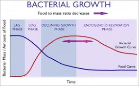

Aplicacion practica
Los metodos de Euler y Heun permiten aproximar soluciones de ecuaciones diferenciales que describen procesos dinamicos, como la temperatura de un liquido que se enfria segun la diferencia con el ambiente.
Un modelo simple de enfriamiento puede escribirse como y'(t) = -k (y - T_amb), donde y(t) es la temperatura del liquido y T_amb la temperatura ambiente.
